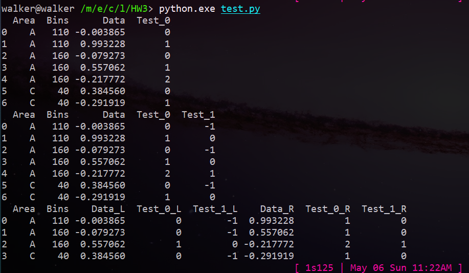

Pandas 数据处理
https://pandas.pydata.org/pandas-docs/stable/cookbook.html#cookbook-merge
其实官网教程还是讲的很清楚的，下面就是放一些我一开始没有理解的特别好的地方，以提醒自己。
没理解好应该是因为我没有学过数据库吧emmmm。。。。
表格的合并merge()方法
关于表格的合并这一块，一开始理解了蛮久才懂。下面先放一个例子吧。
1 | import pandas as pd |
通过理解这一个例子，我总算是明白了on : Columns (names) to join on.的意思，下面放分析过程吧。

第一个print，第二个print，相必都非常好理解。
对于第三个print，为什么输出了这样的表格呢？要理解这个，必须明白理解on参数的意思。
上面使用了left_on 和 right_on两个参数，指明了需要合并的列。
- 用这些列来合并两个表格，那其他的列便会作为需要合并的数据，分别在列名后加上后缀，将这些数据放到对应的index处。
- 问题在于：pandas如何知道这个数据该放到哪一行？
- 如果将这个合并过程，看做重新创建一个表格，我们可以从确定表格的两个关键：索引，数据分别分析
- 合并后新的表格，每一个项应该准确的对应一个索引，这个索引的创建由
on参数决定。上面中的left_on,right_on,其实我们可以这样想：在默认的inner模式下， 当right_on这些列中的元素与left_on这些列中的元素都相等，这些列中的元素便可以作为一个索引 - 那么这个索引对应的数据有哪些呢？数据从不做索引的列中取得。
- 使用这个索引，在原来的left的表中不做索引的列中找到对应的项，加到新表格该项的后面去
- 在right表中同理。
- 合并后新的表格，每一个项应该准确的对应一个索引，这个索引的创建由
我觉得写得好像有点难理解？
on参数决定的是在合并过程中作为索引找到对应数据的项
最后一句话总结大概是这样吧，我总算是理解了on参数的意义。
建议多练习，多去改变参数试一下，心里就很清楚了。